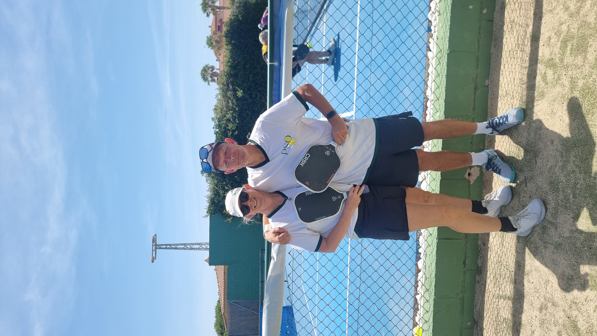
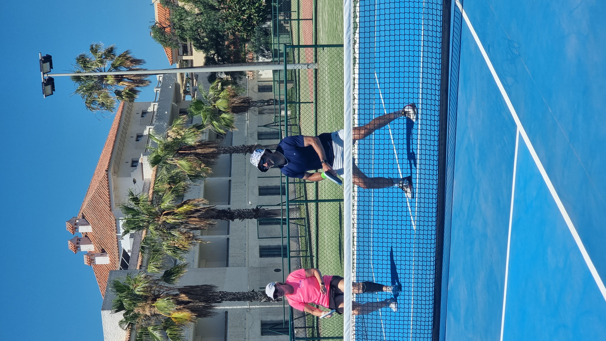

We came to Rota to play the ReBALLution Cup, splitting our time between ReBALLution Pickleball Rota and Hotel Playa de la Luz, where we stayed. Eight games across two venues, including a 15–13 quarter-final win we broke down with PBVision — a proper tournament stop on the Cádiz coast.

The tournament venue for the ReBALLution Cup — 8 dedicated hard courts, 4 indoor and 4 outdoor, with permanent lines and nets. Membership is normally required to play here, so this one's easiest to access around a tournament or organised event rather than as a casual drop-in.
Where we stayed for the tournament, and a venue in its own right — 4 outdoor hard courts, pay-to-play, with restrooms on site. Handy for practice sessions around the main event a short walk down the same road as ReBALLution. Louise got a session in here with pro player James Chaudry.

This was the ReBALLution Cup quarter-final — we uploaded the match to PBVision and analysed what actually happened on court.
The model's top growth signal from this game: dink consistency — landing just 69% of dinks cleanly, the clearest opportunity in the data. Kitchen arrival on serve was also low, at 37%.
Watch the full PBVision breakdown →| Court quality | ★★★★☆ |
| Quality of games | ★★★★★ |
| Ease of joining | ★★★☆☆ |
| Competitive level | ★★★★★ |
| Value | ★★★★☆ |
| Wanderers rating | 8/10 |
Would we go back? Yes — a proper tournament stop with strong competition, though the members-only side of ReBALLution means it's easiest around an event like the Cup rather than a casual visit.
ReBALLution is members-only, so a tournament or organised event is the easiest way in as a visitor.
Courts on site mean you can warm up or get extra reps in without leaving the hotel.
Worth confirming demo equipment availability at either venue ahead of time.
Rota delivered real tournament pickleball — eight games, a 6–2 record, and courts at both the venue and the hotel we stayed at. A strong stop on the Cádiz coast, especially timed around the ReBALLution Cup.